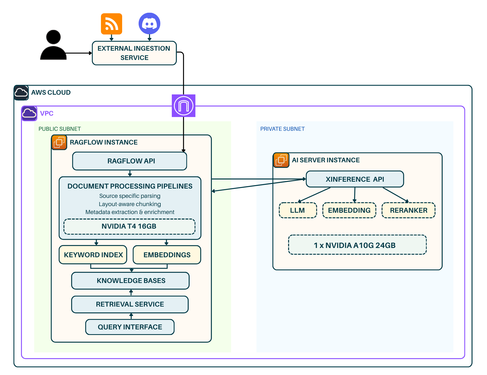
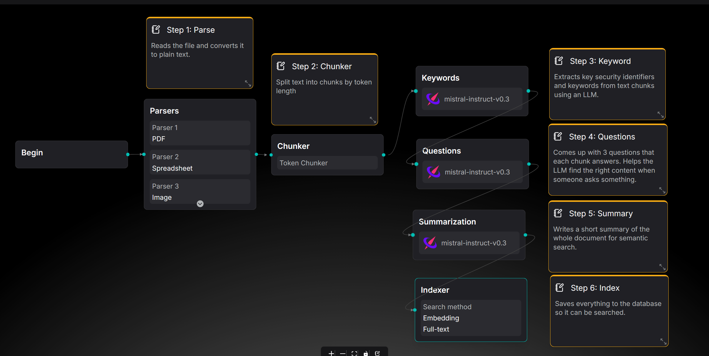

Development of a Secure, Multi-Source Retrieval Augmented Generation (RAG) System for Offensive Security Knowledge Management
A proof-of-concept, fully self-hosted RAG system that enables red team operators to curate, manage, and query cybersecurity knowledge bases from both internal and external sources, returning transparent, source-backed answers.
Designed to address the operational security and knowledge accessibility challenges identified in offensive security workflows.
RAGFlow knowledge bases act as separate datasets, each with their own documents, parsing config, and retrieval pipeline.
RSS and Discord are supported as external sources, with most file types accepted through direct upload.
The external ingestor scrapes and normalises content and injects metadata. RAGFlow then enriches each chunk with keywords, summaries, and generated questions.
AWS resources are defined and deployed using IaC.
The external ingestor has its own UI for configuring sources. RAGFlow provides a separate interface for knowledge base management, pipeline configuration, and querying.
RAGFlow lets you build multiple pipelines with different chunking and retrieval configs. Xinference supports distributed inference, and the ingestor backend runs on FastAPI.
The external ingestor feeds content into RAGFlow, which handles the pipelines and knowledge bases and calls out to the AI inference backend for embeddings, generation, and reranking.

Architecture diagram placeholderThe external ingestor has its own UI for managing and running sources. RAGFlow handles knowledge base management, pipeline config, and querying.
Ingested content flows through a configurable pipeline that applies metadata enrichment to improve downstream retrieval.
